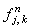
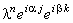
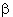
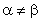
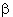
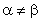

|
2.2. Исследование устойчивости.
Исследуем устойчивость неявной разностной схемы (8.8), аппроксимирующей
дифференциальное уравнение (8.1), с помощью спектрального метода. Для этого отбрасываем член ,
наличие которого, как известно, не оказывает влияния на устойчивость разностной схемы, и представляем
решение в виде гармоники:
Упрощаем данное выражение, деля левую и правую его части на :
Группируя члены, содержащие  , в левой части уравнения, выразим величину, обратную :
Напомним, что если величины, обратные собственным числам оператора перехода, имеют комплексный вид,
то согласно необходимому условию устойчивости разностных схем (3.8), записанному в виде (5.7),
требуется, чтобы они были расположены вне или на границе круга радиусом 1, центр которого
находится в начале координат комплексной плоскости. , в левой части уравнения, выразим величину, обратную :
Напомним, что если величины, обратные собственным числам оператора перехода, имеют комплексный вид,
то согласно необходимому условию устойчивости разностных схем (3.8), записанному в виде (5.7),
требуется, чтобы они были расположены вне или на границе круга радиусом 1, центр которого
находится в начале координат комплексной плоскости.
Введём следующие обозначения:
Данное выражение трудно анализировать, поскольку оно содержит две переменные
величины -  и .
Рассмотрим наиболее простой случай, когда = :
Полученное выражение свидетельствует о том, что величины, обратные собственным числам оператора перехода,
расположены на комплексной плоскости на окружности с центром в точке (1 + r; 0) и радиусом r.
Данная окружность находится вне круга, соответствующего условию (5.7) при любом значении
r (см. рисунок). Таким образом, в случае = неявная разностная схема (8.8) устойчива. Можно
доказать, что устойчивость разностной схемы (8.8) сохранится и в случае  (в силу сложности
это доказательство не рассматривается); следовательно, неявная разностная схема (8.8) является
абсолютно устойчивой. и .
Рассмотрим наиболее простой случай, когда = :
Полученное выражение свидетельствует о том, что величины, обратные собственным числам оператора перехода,
расположены на комплексной плоскости на окружности с центром в точке (1 + r; 0) и радиусом r.
Данная окружность находится вне круга, соответствующего условию (5.7) при любом значении
r (см. рисунок). Таким образом, в случае = неявная разностная схема (8.8) устойчива. Можно
доказать, что устойчивость разностной схемы (8.8) сохранится и в случае  (в силу сложности
это доказательство не рассматривается); следовательно, неявная разностная схема (8.8) является
абсолютно устойчивой.
Проведя исследование устойчивости неявных разностных схем (8.9)-(8.11)
по аналогичной методике, можно доказать, что каждая из них также является абсолютно устойчивой.
|